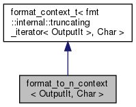

format_to_n_context< OutputIt, Char > Struct Template Reference
#include <format.h>
Inheritance diagram for format_to_n_context< OutputIt, Char >:

Collaboration diagram for format_to_n_context< OutputIt, Char >:

Additional Inherited Members | |
 Public Types inherited from format_context_t< fmt::internal::truncating_iterator< OutputIt >, Char > Public Types inherited from format_context_t< fmt::internal::truncating_iterator< OutputIt >, Char > | |
| typedef basic_format_context< fmt::internal::truncating_iterator< OutputIt >, Char > | type |
Detailed Description
template<typename OutputIt, typename Char = typename OutputIt::value_type>
struct format_to_n_context< OutputIt, Char >
The documentation for this struct was generated from the following file:
- util/inc/spdlog/fmt/bundled/format.h